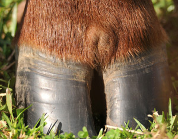

Although Kathy's story is strictly hypothetical, it is completely conceivable. Consider the reality:
Foot-and-mouth disease (FMD) is a highly contagious virus that affects all cloven-hoofed livestock, including cattle, pigs, sheep and goats. It is the most contagious livestock disease, and, according to one U.S. Department of Agriculture official, "moves like wildfire." More exotic livestock, such as l lamas, elk, deer, bison, bears, armadillos, hedgehogs and elephants, are also susceptible. The disease can easily be transmitted in the air, by direct contact or by ingestion. Air currents and wind can transmit virus particles from heavily infected animals up to 40 miles away.
The virus can be carried in uncooked, underprocessed meat, fat, and milk or food items produced from them (such as sausage, for instance). Virus particles can be transmitted on contaminated inanimate objects like soil, clothing and shoes, surviving up to 46 days at room temperature.
As she headed through customs, Kathy noticed signs instructing arriving passengers who had been to England to have their shoes disinfected in foot baths. The customs officer specifically asked her if she had visited any farms or had any food products in her possession. She felt herself flushing as she fibbed, hoping her sausage could make it home as a gift for a friend.
The customs official gave her a quick glance, lingering momentarily on Kathy's reddened face. She looked innocent enough, and he nodded her through his portal without a baggage search. She stepped into the foot bath, then wheeled her luggage under the towering tent poles that supported Denver International's massive white roof, heading toward her pickup parked in the outer lot.
The United Kingdom has been Ground Zero for the recent foot-and-mouth disease outbreak in Europe. On February 19, 2001, a routine veterinary inspection near Essex revealed 27 pigs with signs highly suspicious of foot-and-mouth. A day later, the U.K.'s Ministry of Agriculture confirmed the outbreak.
By May 14, more than 1,600 cases of foot-and-mouth disease had been confirmed. Nearly 3 million cattle, sheep, pigs and goats were slaughtered and incinerated in ghastly funeral pyres. The acrid smoke hovering over the rolling hills of England painted afar different picture from the idyllic herds of creatures great and small that James Herriot wrote about.
Further confirmed cases were reported in The Netherlands, France and several countries in South America and the Middle East. The United States has been free of foot-and-mouth. It has been more than 70 years since the last outbreak, when 277 head of cattle, 3,000 pigs and 23 goats were killed.
As Kathy headed back to her ranch, she planned how she would surprise her family and friends with her gifts. The sausage from her cousin's farm would go to her good friendand neighbor Clarence, who operated a small, 150-head dairy nearby.
Early signs of foot-and-mouth in cattle may include: mental dullness; poor appetite; elevated temperature; isolation from the rest of the herd.
Effected dairy cattle show a considerable drop in milk production. As the disease progresses, there may by profuse slobbering as blisters form on the tongue, gums, lips or palate. Lameness occurs as blisters, or vesicles, form between the digits (hooves) and along the coronary band at the top of the hoof. Vesicles may form on the teats and udder as well.
In pigs, the main symptom is lameness. Pigs may lie down and will be reluctant to get up as the blisters form along the coronary band. They may squeal loudly when forced to move. Blisters form on the snout and quickly rupture, developing scabs.
Symptoms are more subtle in sheep and goats, but a sudden lameness may be noted, with blisters forming on the coronary band or in the mouth. Sheep may be reluctant to stand and will appear dull and sick.
Unable to contain her delight, Kathy delivered the sausage to the Clarence's dairy on her way home. He appreciatively accepted it, passing it back and forth between his hands as he enjoyed its pungent garlicky aroma. He then headed out to do the evening milking.
There is no treatment for foot-and-mouth. Animals may recover, but will remain debilitated and will carry the virus for the rest of their lives. Humans, except in a few rare cases, are not susceptible, nor are horses and other noncloven hooved animals. Vaccination ultimately will be the preferred action in the face of an outbreak, but until now no effective test has been available to let veterinarians differentiate between vaccinated, disease free animals and those that carry the disease. Thus, when one animal showed symptoms, the entire herd had to be destroyed. A new blood test is being developed that will distinguish between animals that have been vaccinated and those that are actually carrying the virus, and should be available by the time this issue of MOTHER is published, thus ending much of the carnage associated with an foot-and-mouth epidemic.
The Colorado state veterinarian had been dreading the call, but expecting it. A veterinarian from northern Colorado had called to report signs of foot-and-mouth disease in a dairy herd in his county. If there were a case of foot-and-mouth in the United States, the state veterinarian knew, all U.S. exports of red meat to disease-free countries would cease, involving as many as 600 million live animals and a loss of $4.4 billion a year.
The point of this cautionary tale is that something as innocent as a smuggled sausage could wreak havoc in the American livestock industry. The epidemic would be even more devastating in the United States than in Europe, due to the close confinement and living conditions of livestock on factory farms.
|
 PHOTO: ISTOCKPHOTO/BOB BEALE All cloven-hoofed animals (cattle, pigs, sheep, goats, bison, deer and more) can be affected by foot-and-mouth disease. Horses are not susceptible. |
|
|